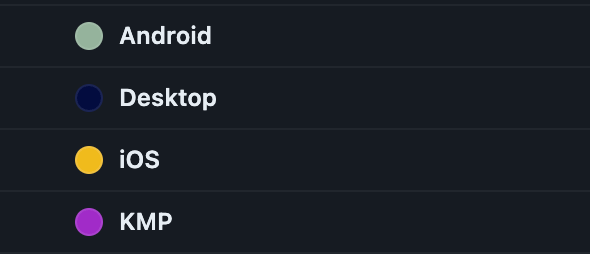

In my previous article, I've shown how to set up a CI for a Kotlin Multiplatform repository. In this post, I'll focus on how to remove GitHub Actions boilerplate.
If you don't use Kotlin Multiplatform, or even Kotlin, don't worry. The main focus of this article is platform-agnostic (YAML and bash). It touches on topics like extracting logic, composite actions, adding job variables.
The CI verification consists of building the project and running tests on: the main branch and PRs. However, for PRs depending on what label the PR has only selected targets will be run, which saves time and costs (for paid plans).
The repository (which is a Kotlin Multiplatform project for Android, Desktop and iOS) used in this article is available in this repository:
 GitHub
GitHub
The Workflows
Without going into the implementation details of what is called where, here's a broad overview of the workflow structure:
name: Code review
on:
workflow_dispatch:
push:
branches:
- main
pull_request:
types: [opened, ready_for_review, synchronize]
branches:
- main
jobs:
Build:
uses: ./.github/workflows/build.yml
UnitTests:
uses: ./.github/workflows/test.yml
AllowMerge:
if: always()
runs-on: ubuntu-latest
needs: [ Build, UnitTests ]
steps:
- run: |
if [ ${{ github.event_name }} == pull_request ] && [ ${{ join(github.event.pull_request.labels.*.name) == '' }} == true ]; then
exit 1
elif [ ${{ (contains(needs.Build.result, 'failure')) }} == true ] || [ ${{ (contains(needs.UnitTests.result, 'failure')) }} == true ]; then
exit 1
else
exit 0
fiThe Code Review workflow
This is the main workflow which will be called by GitHub directly. It calls two other workflows that run the builds and tests. The last job is used for the GitHub PR status check, which fails if there is no PR label or when any of the Build / Tests jobs fail (which is needed because GitHub treats skipped jobs as failed).
This workflow doesn't really contain any repetition / boilerplate which can be improved. The problems lie in the two "sub-workflows" (Don't worry, you don't need to read the whole things):
name: Build
on:
workflow_call:
jobs:
Android:
if: ${{ github.event_name == 'workflow_dispatch' || github.event_name == 'push' || (github.event_name == 'pull_request' && github.event.pull_request.draft == false && (contains(github.event.pull_request.labels.*.name, 'KMP') || contains(github.event.pull_request.labels.*.name, 'Android'))) }}
runs-on: ubuntu-latest
steps:
- uses: actions/checkout@v3
- uses: actions/setup-java@v3
with:
distribution: "adopt"
java-version: "11"
- name: Setup Gradle
uses: gradle/gradle-build-action@v2
- run: ./gradlew :androidApp:assemble
Desktop:
if: ${{ github.event_name == 'workflow_dispatch' || github.event_name == 'push' || (github.event_name == 'pull_request' && github.event.pull_request.draft == false && (contains(github.event.pull_request.labels.*.name, 'KMP') || contains(github.event.pull_request.labels.*.name, 'Desktop'))) }}
runs-on: ubuntu-latest
steps:
- uses: actions/checkout@v3
- uses: actions/setup-java@v3
with:
distribution: "adopt"
java-version: "11"
- name: Setup Gradle
uses: gradle/gradle-build-action@v2
- run: ./gradlew :desktopApp:assemble
iOS:
if: ${{ github.event_name == 'workflow_dispatch' || github.event_name == 'push' || (github.event_name == 'pull_request' && github.event.pull_request.draft == false && (contains(github.event.pull_request.labels.*.name, 'KMP') || contains(github.event.pull_request.labels.*.name, 'iOS'))) }}
runs-on: macos-12
steps:
- uses: actions/checkout@v3
- uses: actions/setup-java@v3
with:
distribution: "adopt"
java-version: "11"
- name: Setup Gradle
uses: gradle/gradle-build-action@v2
- run: ./gradlew :shared:generateDummyFramework
- name: Set up cocoapods
uses: maxim-lobanov/setup-cocoapods@v1
with:
version: latest
- name: Install Dependencies
run: |
cd iosApp
pod install --verbose
- run: xcodebuild build -workspace iosApp/iosApp.xcworkspace -configuration Debug -scheme iosApp -sdk iphoneos -destination name='iPhone 14' -verboseThe Build workflow
The basic idea is as follows for both the Builds and UnitTests workflows. The jobs should only run when
- Started manually through workflow_dispatch
- From a push on the main branch
- When a PR is opened or pushed to (It's important that the PR is not a draft as to not waste billing minutes)
Additionally, PR labels control for which platforms the jobs will run:

For example, if the PR changes are only for the Android codebase, then the PR should have the Android label. The KMP label should be used when the shared codebase changes and because it is used by all platforms, all jobs should be run.
Boilerplate
In this article I'll only focus on the Build workflow, however the same steps should be applied to the UnitTests workflow, as both of them have the following boilerplate:
- All of the above jobs have the same two set-up steps
- Java
- Gradle
- Repeated if statements
- For the GitHub event (workflow_dispatch, push, pull_request)
- For the PR label (github.event.pull_request.labels.*.name)
Extracting steps to a separate file
Steps can be moved to a composite action, which can be then re-used multiple times across all jobs.
The Java and Gradle composite action could look like this:
name: Job set up
description: Sets up Java and Gradle
runs:
using: "composite"
steps:
- uses: actions/setup-java@v3
with:
distribution: "adopt"
java-version: "11"
- name: Setup Gradle
uses: gradle/gradle-build-action@v2job-set-up/action.yaml
The name of the composite action becomes the name of the parent folder, which in this case is job-set-up.
And then it can be re-used in all the jobs like this:
Android:
if: ${{ github.event_name == 'workflow_dispatch' || github.event_name == 'push' || (github.event_name == 'pull_request' && github.event.pull_request.draft == false && (contains(github.event.pull_request.labels.*.name, 'KMP') || contains(github.event.pull_request.labels.*.name, 'Android'))) }}
runs-on: ubuntu-latest
steps:
- uses: actions/checkout@v3
- name: Job set up
uses: ./.github/actions/job-set-up
- run: ./gradlew :androidApp:assembleThanks to this extraction, whenever the set-up changes, only one file will need to be changed instead of going through all the jobs in all the workflows.
Extracting the GitHub event condition
As shown previously, the if statement is pretty complex, which leads to it being hard to understand. To make the matter worse, it is scattered through all the jobs, making it hard to change.
As we all know, developers are lazy creatures, instead of changing all of them separately, they'll for sure copy and paste the if statement, which will sooner or later lead to bugs and typos.
Unfortunately, if statements for jobs cannot be extracted to composite actions, so a different approach is needed.
What can be done is to move the if statement to an additional job that runs before Build and UnitTests workflows:
# ...
jobs:
SetUp:
runs-on: ubuntu-latest
steps:
- id: setVariables
name: Set variables
run: |
if [ ${{ github.event_name }} == workflow_dispatch ] || [ ${{ github.event_name }} == push ] || ([ ${{ github.event_name }} == pull_request ] && [ ${{ github.event.pull_request.draft }} == false ]); then
exit 0
else
exit 1
fi
Build:
needs: SetUp
uses: ./.github/workflows/build.yml
UnitTests:
needs: SetUp
uses: ./.github/workflows/test.yml
The SetUp job checks if the workflow was started in the right conditions, if yes then it completes successfully, allowing the Build and UnitTests workflows to start. Otherwise, SetUp fails, causing Build and UnitTests to also fail, thus reducing the duplication inside the workflows while behaving in the same way.
Here's what the Android build job looks after this change:
Android:
if: ${{ github.event_name != 'pull_request' || (github.event_name == 'pull_request' && (contains(github.event.pull_request.labels.*.name, 'KMP') || contains(github.event.pull_request.labels.*.name, 'Android'))) }}
# ...The if statement is better but still complex, the first condition (!= 'pull_request') is required because without it, manual or main branch runs would always result in skipped jobs, but for PRs, the labels are checked just like before.
Remember to always double-check that condition changes didn't break other types of workflow runs.
Reducing Label Boilerplate
The below example only shows the Android build job, but please note that these changes affect all the jobs, but were just omitted for brevity.
The previous if statement was the same for all jobs, however label logic differs between jobs. This means that the if statement cannot be completely removed, however it can be improved using some bash logic and by passing variables between jobs:
# ...
jobs:
SetUp:
runs-on: ubuntu-latest
steps:
- id: setVariables
name: Set variables
run: |
echo "shouldRunKmp=${{ contains(github.event.pull_request.labels.*.name, 'KMP') }}" >> "$GITHUB_OUTPUT"
echo "shouldRunAndroid=${{ contains(github.event.pull_request.labels.*.name, 'Android') }}" >> "$GITHUB_OUTPUT"
# ...
outputs:
shouldRunKmp: ${{ steps.setVariables.outputs.shouldRunKmp }}
shouldRunAndroid: ${{ steps.setVariables.outputs.shouldRunAndroid }}
Build:
needs: SetUp
uses: ./.github/workflows/build.yml
with:
shouldRunKmp: ${{ needs.SetUp.outputs.shouldRunKmp }}
shouldRunAndroid: ${{ needs.SetUp.outputs.shouldRunAndroid }}The above set-up logic reads the PR labels and passes them to other jobs, which can be used like this:
name: Build
on:
workflow_call:
inputs:
shouldRunKmp:
required: true
type: string
shouldRunAndroid:
required: true
type: string
# ...
jobs:
Android:
if: ${{ github.event_name != 'pull_request' || (github.event_name == 'pull_request' && (inputs.shouldRunKmp == 'true' || inputs.shouldRunAndroid == 'true')) }}
# ...This improves the if statement, but it can still be improved further. The SetUp job already has an early return based on the event_name, but here it is duplicated. Instead of duplicating it, the logic can be included as part of the output variables logic:
SetUp:
runs-on: ubuntu-latest
steps:
- id: setVariables
name: Set variables
run: |
isFromMain=${{ github.ref == 'refs/heads/main' }}
isManual=${{ github.event_name == 'workflow_dispatch' }}
hasKmpLabel=${{ contains(github.event.pull_request.labels.*.name, 'KMP') }}
shouldRunKmp=false
if $isFromMain || $isManual || $hasKmpLabel ; then
shouldRunKmp=true
fi
echo "shouldRunKmp=$shouldRunKmp" >> "$GITHUB_OUTPUT"
echo "shouldRunAndroid=${{ contains(github.event.pull_request.labels.*.name, 'Android') }}" >> "$GITHUB_OUTPUT"
# ...
outputs:
shouldRunKmp: ${{ steps.setVariables.outputs.shouldRunKmp }}
shouldRunAndroid: ${{ steps.setVariables.outputs.shouldRunAndroid }}In case the PR run on the main branch or started manually, the shouldRunKmp is set to true, meaning that all jobs will be started, and for PRs, the labels decide what is run. This change, reduces the job if statements to just using the input variables:
jobs:
Android:
if: ${{ inputs.shouldRunKmp == 'true' || inputs.shouldRunAndroid == 'true' }}
# ...With this change, most of the logic resides in the SetUp job, which makes it easier to understand and also eliminates copy and paste errors. In the future, if the conditions change, probably only the SetUp job will need to change and all other jobs will remain unchanged.
Workflow Reusability
As you may have noticed, the Build and UnitTests workflows were specified as separate workflows using workflow_call. Thanks to this, they can be used in other workflows.
For example, if the project had a nightly verification, both of these workflows could be re-used to make sure that nothing broke the main branch. Please note, that with the above logic, the nightly would need to pass in the correct variables for the jobs to run (Or just the KMP one).
Summary
- Composite actions - help with repeated steps, like common set-up logic
- Set-up jobs - can contain early returns for workflow starts in the wrong conditions
- Output variables - can be used to reduce the number of conditions in jobs
- Reusable workflows - can be re-used across multiple workflows, eliminating copying and pasting logic throughout different files
All the changes discussed in this article can be seen in this PR.
Course
If you found this helpful, you might be interested in the Android Next Level course I'm a co-author of. It goes more in-depth into CI/CD for Android, e.g. Code Review, Manual builds for testers, Release builds, Nightly verification and more. Currently, the course is only available in Polish, but there is a waitlist for those interested in an English version of it, so feel free to check it out if you're interested!